ハノイから南へ約100km。石灰岩の峰々に守られた「華閭（ホアルー）」は、ベトナム最初の統一王朝の都でした。小舟で洞窟をくぐり、500段の石段を登り、名物のヤギ料理を味わう——ベトナムの「原点」を巡る一日です。Cách Hà Nội ~100 km về phía Nam, Hoa Lư – được núi đá vôi bao bọc – là kinh đô của nhà nước phong kiến tập quyền đầu tiên của Việt Nam. Một ngày ngồi thuyền xuyên hang, leo 500 bậc đá, thưởng thức dê núi – trở về "điểm khởi đầu" của Việt Nam.
📅 16年前の今日、2010年10月10日——ハノイは「昇龍（タンロン）遷都千年祭」の式典を行いました。その都の出発点が、今日訪れるホアルーです。📅 Đúng ngày này 16 năm trước – 10/10/2010 – Hà Nội tổ chức Đại lễ 1000 năm Thăng Long. Và nơi kinh đô ấy khởi hành chính là Hoa Lư, nơi chúng ta đến hôm nay.
日程・集合NGÀY & ĐIỂM TẬP TRUNG
10月10日（土）08:15 集合Thứ Bảy 10/10 · tập trung 08:15
Grandiose Hotel & Spa ロビー(sảnh) · 出発 08:30xuất phát 08:30
Tập trung ở sảnh. Kiểm tra giày thể thao, mũ, nước, tiền mặt (danh sách đồ).
💭 いまのあなたへDÀNH CHO BẠN LÚC NÀY朝早くの集合、おつかれさまです。今日は長い一日なので、朝ごはんはしっかりと。車内で少し眠ってもOKです。Tập trung sớm, vất vả rồi! Hôm nay là một ngày dài – nhớ ăn sáng đầy đủ, lên xe ngủ thêm chút cũng được.
🚩 引率メモGHI CHÚ DẪN ĐOÀN
Điểm danh 2 xe. Mua sẵn nước suối cho cả đoàn.
Gọi xác nhận đặt bàn nhà hàng Thành Long: 0972 162 261 (6 người, ~11:00, gọi sẵn set dê để ăn nhanh).
Kiểm tra tuyến 3 Tràng An hôm nay có chạy không (mùa nước lên có thể tạm dừng): BQL (0229) 3890 217.
🛣 ~100 kmPháp Vân – Cầu Giẽ – Ninh Bình☕ 途中休憩 15分nghỉ giữa đường 15'
市内を抜けて南へ。高速道路（Pháp Vân–Cầu Giẽ → Cầu Giẽ–Ninh Bình）を走ります。約1時間後（09:30頃）、高速道路上のDuy Tiên サービスエリア（Km227、Phú Thứ IC付近）でトイレ休憩15分。窓の外に石灰岩の山が見え始めたら、ニンビンはもうすぐ。
Ra khỏi nội thành, đi cao tốc Pháp Vân–Cầu Giẽ rồi Cầu Giẽ–Ninh Bình. Khoảng 1 tiếng sau (~09:30) nghỉ 15 phút tại trạm dừng nghỉ Duy Tiên – Km 227 (ngay trên cao tốc, gần nút Phú Thứ). Khi thấy núi đá vôi hai bên đường là sắp tới Ninh Bình.
💭 いまのあなたへDÀNH CHO BẠN LÚC NÀY2時間のドライブは、運転する人も乗る人も疲れます。途中のサービスエリアで15分休憩して、トイレ・ストレッチ・水分補給を。何より大切なのは安全。ドライバーが眠そうなら声をかけて、無理せず休みましょう。Ngồi xe 2 tiếng, cả lái xe lẫn người ngồi đều mỏi. Dừng 15 phút ở trạm nghỉ: đi vệ sinh, vươn vai, uống nước. Quan trọng nhất là an toàn – lái xe thấy buồn ngủ thì nghỉ thêm, đừng cố.
🚩 引率メモGHI CHÚ DẪN ĐOÀN
2 xe đi nối nhau; nếu lạc, hẹn gặp ở trạm dừng nghỉ Duy Tiên (Km 227).
Chiều đi: lối vào trạm ở Km 226+880, rẽ phải sau hầm Phú Thứ – đi theo biển "Trạm dừng nghỉ".
Không vào các trạm Bình An / 8668 / Thăng Long 2 / Chung Vổ: nằm trên nhánh nút Liêm Tuyền đi Nam Định, phải rời cao tốc.
2022年にできた、10世紀・大瞿越の文化をモチーフにした新しい「古街」。麒麟山（Núi Kỳ Lân）のふもと、銀の寺（Chùa Bạc）の隣。午前は静かで写真向き。お店や灯籠が賑わうのは夕方〜夜です。
"Phố cổ" mới xây (mở năm 2022), lấy cảm hứng từ văn hoá Đại Cồ Việt thế kỷ X, dưới chân núi Kỳ Lân cạnh Chùa Bạc. Buổi sáng yên tĩnh, hợp chụp ảnh; hàng quán và đèn lồng sôi động từ chiều tối.
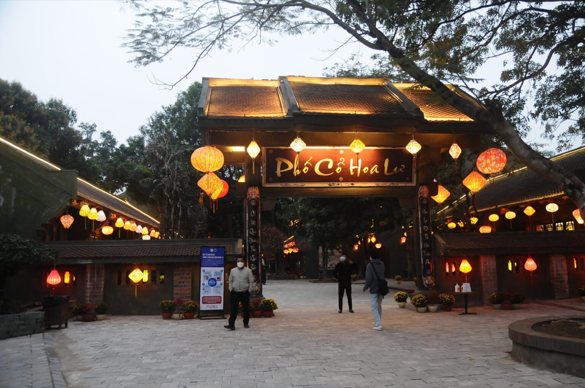
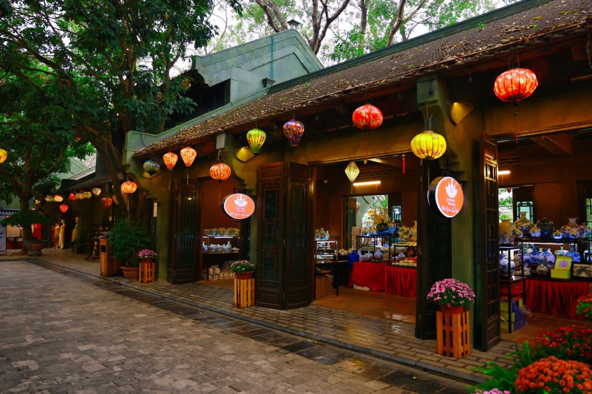
💭 いまのあなたへDÀNH CHO BẠN LÚC NÀY2時間座りっぱなしの後は、少し歩いて体をほぐしましょう。古街を10〜20分ぶらぶらするだけで気分がすっきりして、お昼ごはんもおいしくなります。Sau 2 tiếng ngồi xe, đi bộ dạo phố cổ 10–20 phút cho giãn người – thấy thoải mái, bữa trưa cũng ngon hơn.
🚩 引率メモGHI CHÚ DẪN ĐOÀNTuỳ chọn. Nếu đến muộn hơn 10:45 thì vào thẳng nhà hàng.任意。10:45以降に到着ならレストランへ直行。
Theo các blog du lịch Nhật: dê ít mùi hơn cừu, giòn sần sật nhưng không phải ai cũng hợp; cơm cháy được khen nhất. Vì vậy chọn món chín kỹ là chính, kèm một món không phải dê.
Cơm cháy sốt dê ×2 ⭐ 日本人旅行者に一番人気。パリパリおこげにヤギのあんかけ⭐ món được khách Nhật khen nhiều nhất
149k ×2
Dê áp chảo 焼肉のような鉄板焼き。日本人ブロガーのお気に入りáp chảo – giống yakiniku, dễ ăn
Cơm tám ×3 + đồ uống 香り米・ソフトドリンク・ビールcơm, nước ngọt, bia
~300k
合計 約190万ドン（1人 約32万ドン）の目安。価格は店のWebメニュー（2025〜2026）より、変更の可能性あり。Tổng ~1,9 triệu (~320k/người). Giá theo thực đơn web (2025–2026), có thể thay đổi.
🌶 チャレンジ枠（任意）：名物「Dê tái chanh（レモン和え）」は半生なので、試したい人用に1皿だけ。鍋（Lẩu dê）は昼には重く時間がかかるので今回は省略。生き血料理（tiết canh）は注文しない。🌶 Món "thử thách" (tuỳ chọn): dê tái chanh là thịt tái – gọi 1 đĩa cho ai muốn thử. Lẩu dê nặng và lâu, bỏ qua buổi trưa. Không gọi tiết canh.
🐷 Thịt rang mắm tép 156k (mắm tép Gia Viễn – đặc sản Ninh Bình)
🐸 Ếch 150k, lươn đồng 200k, các món bò 120–200k
🥬 Rau xào 45k, đậu phụ 49–60k, trứng rán 55k, cơm rang 75k, nộm hoa chuối 120k
※鶏肉料理はメニューにありません。※ Thực đơn không có món gà.
候補2：Dê núi Tràng An（ホアルー古街内）Phương án 2: Dê núi Tràng An (trong Phố cổ Hoa Lư)
🚩 引率メモGHI CHÚ DẪN ĐOÀN
Gọi trước hotline đặt bàn 6 người và đặt trước món theo bảng gợi ý (ưu tiên món chín kỹ, dặn ít cay) để lên món ngay khi tới.
Rời nhà hàng lúc 12:15 để kịp thuyền 12:45 – thanh toán trước 12:10.
Nhắc cả đoàn đi vệ sinh trước khi lên thuyền (3 tiếng trên sông).
Món có tiết canh / rượu tiết: hỏi trước, không ép khách Nhật.
12:15出発厳守（会計は12:10までに）。
乗船前に必ずトイレへ（約3時間の舟旅）。
💭 いまのあなたへDÀNH CHO BẠN LÚC NÀYヤギ料理は好みが分かれます。口に合わなくても大丈夫。ヤギ以外の料理を頼んでも、近くの別のお店に変えてもOKです。食べたいものは遠慮なく伝えてください。みんなで相談して、全員が気持ちよく食べられる場所を選びましょう。Dê núi có thể không hợp khẩu vị – không sao cả. Có thể gọi món khác, hoặc cả nhóm cùng đổi sang quán gần đó. Cứ thoải mái nói mình muốn ăn gì; cùng nhau chọn chỗ để ai cũng ăn ngon miệng, thấy dễ chịu.
Vé đã gồm thuyền, người chèo và bảo hiểm. Chọn Tuyến 3 tại quầy. Bắt buộc mặc áo phao.
💭 いまのあなたへDÀNH CHO BẠN LÚC NÀYここから約3時間は舟の上。乗る前にトイレを済ませ、水を1本、帽子か日傘を手元に。準備ができていると、舟の上でゆったり過ごせます。Sắp tới là ~3 tiếng trên thuyền. Đi vệ sinh trước, cầm 1 chai nước, mũ hoặc ô – chuẩn bị xong là có thể thư thái tận hưởng.
Cả đoàn 6 người (gồm 2 lái xe) xin đi chung 1 thuyền. Nếu quầy vé không cho → tách 2 thuyền theo hướng dẫn của quầy, mỗi thuyền có 1 người nói tiếng Việt.
Để đồ không cần thiết trong xe; mang theo nước + mũ.
Ghi nhớ vị trí đỗ xe; cả đoàn quay lại bãi xe ~15:45.
"Trình" là trình báo thần linh trước khi vào vùng đất thiêng. Tương truyền hơn 1000 năm tuổi, kiến trúc hình chữ Đinh (丁). Thờ "Tứ trụ triều Đinh": Đinh Điền, Nguyễn Bặc, Lưu Cơ, Trịnh Tú. Trước đền có đôi cá chép đá – biểu tượng may mắn – và cá chép thật dưới nước.
🕳 Hang Đột — 全長1,000m以上、チャンアンで最も長く美しい洞窟とされ、第3ルートのハイライト。天井は高めで、さまざまな形の鍾乳石が続きます。抜けるのに約30分。dài hơn 1.000 m, được xem là hang dài và đẹp nhất Tràng An – điểm nhấn của tuyến 3. Trần khá cao, nhũ đá đủ hình dáng; đi hết ~30 phút.
🕳 Hang Vân（Hang Mây） — 「雲の洞窟」。Vân（雲）は漢越語、Mâyは日常語で、どちらも「雲」。全長約900m。洞窟の前後は「雲の谷（Thung Mây）」と呼ばれる、峰に囲まれた約12,000㎡の水の盆地です。Vân (雲) và Mây cùng nghĩa là mây. Dài gần 900 m, nằm trong Thung Mây – thung nước ~12.000 m² bao quanh bởi núi đá; ánh sáng trong hang tạo cảm giác mờ ảo như mây.
⛩ Đền Suối Tiên — 上陸。雄王（フンヴオン）時代の将軍貴明大王（Quý Minh Đại vương）を祀る。Sào Khê川の上流にあり、丁先皇即位1050年（2018年）を記念して、丁・鉄木（lim）など4種の銘木で再建されました。lên bờ. Thờ Đức thánh Quý Minh Đại vương – tướng thời Hùng Vương. Ở thượng nguồn sông Sào Khê; dựng lại năm 2018 dịp kỷ niệm 1050 năm Đinh Tiên Hoàng lên ngôi, bằng 4 loại gỗ quý đinh, lim, sến, táu.
⛰ Núi Địa Linh · Núi Kim Quy — 洞窟ではなく水面から垂直にそびえる塔のような峰。蓮の花が開いたような形とも。Kim Quy は「金の亀」。「陸のハロン湾」と呼ばれる景色はまさにここ。không phải hang mà là núi đá dựng đứng giữa nước; Địa Linh được ví như đoá sen nở. Kim Quy = rùa vàng. Đây chính là khung cảnh "Hạ Long trên cạn".
🕳 Hang Đại — 長さ約150m。広々として風通しのよい洞窟。dài ~150 m, rộng và thoáng.
Căn cứ quân sự do Trần Thái Tông lập sau chiến thắng Mông Cổ lần 1 (1258); gắn với kháng chiến chống Nguyên lần 2 (1285). Vua Trần Thái Tông cuối đời tu ở Am Thái Vi; Trần Nhân Tông sau khi nhường ngôi cũng tu ở đây trước khi lên Yên Tử lập Thiền phái Trúc Lâm. Nay còn Đền Thái Vi, chùa Khai Phúc (chùa Hành Cung).
（航路により）キングコングのロケ村が見えることも — 公式の第3ルートには含まれないため、漕ぎ手に聞いてみて。(Tuỳ luồng) phim trường Kong – không nằm trong lộ trình chính thức tuyến 3, hỏi người chèo.
乗船場に帰着Về bến
第3ルート＝「洞窟3つ＋霊所3つ」。洞窟の合計は約2km。トイレや飲み物は上陸地点で探せることが多いですが、乗船前に済ませておくのが安心です。Tuyến 3 = "3 hang + 3 điểm tâm linh", tổng chiều dài hang ~2 km. Nên đi vệ sinh, mua nước trước khi lên thuyền.
👀 見どころĐIỂM NHẤN漕ぎ手の多くは近くの村の女性たち。洞窟内は天井が低い所があるので、頭を下げ、手を舟の外に出さないように。→ チャンアンの詳しい話Người chèo phần lớn là phụ nữ các làng quanh đây. Trong hang có chỗ trần rất thấp: cúi đầu, không thò tay ra ngoài. → Tìm hiểu thêm về Tràng An
🚩 引率メモGHI CHÚ DẪN ĐOÀN
Hỏi người chèo: "Tuyến này có qua phim trường Kong không?"
Tip người chèo tuỳ tâm, tham khảo 50–100k/thuyền.
チップは任意（目安：1艘50,000〜100,000ドン）。
💭 いまのあなたへDÀNH CHO BẠN LÚC NÀY3時間座っていると腰やお尻が疲れてきます。上陸ポイントでは歩いて伸びを。外は日差しが強いので帽子・日傘を、洞窟の中はひんやり——その差も楽しんで。漕ぎ手さんに「Cảm ơn!（カム オン）」と声をかけると、きっと笑顔が返ってきます。Ngồi thuyền lâu sẽ mỏi lưng – mỗi lần lên bờ hãy đi lại, vươn vai. Ngoài trời nắng thì đội mũ, che ô; vào hang lại mát lạnh. Đừng quên cảm ơn cô lái đò nhé.
行く／スキップの判断：16:15以降の到着になる・雨・体調不良の人がいる → ハンムアはスキップしてハノイへ。Đi hay bỏ? Nếu đến sau 16:15, trời mưa, hoặc có người mệt → bỏ Hang Múa, về thẳng Hà Nội.
💭 いまのあなたへDÀNH CHO BẠN LÚC NÀY舟のあとは疲れが出てくる頃。体調は正直に伝えてください。登らないのも立派な選択です。ふもとで休んでいても、旅は十分楽しめます。Sau 3 tiếng trên thuyền, ai mệt cứ nói thật. Không leo cũng là lựa chọn tốt – nghỉ dưới chân núi vẫn trọn vẹn chuyến đi.
登り始め 岩山に刻まれた石段を一段ずつ。最初が一番きついので、ゆっくりと。Bắt đầu leo Bậc đá men theo núi; đoạn đầu dốc nhất, cứ đi chậm.Shyamal, CC BY-SA 4.02
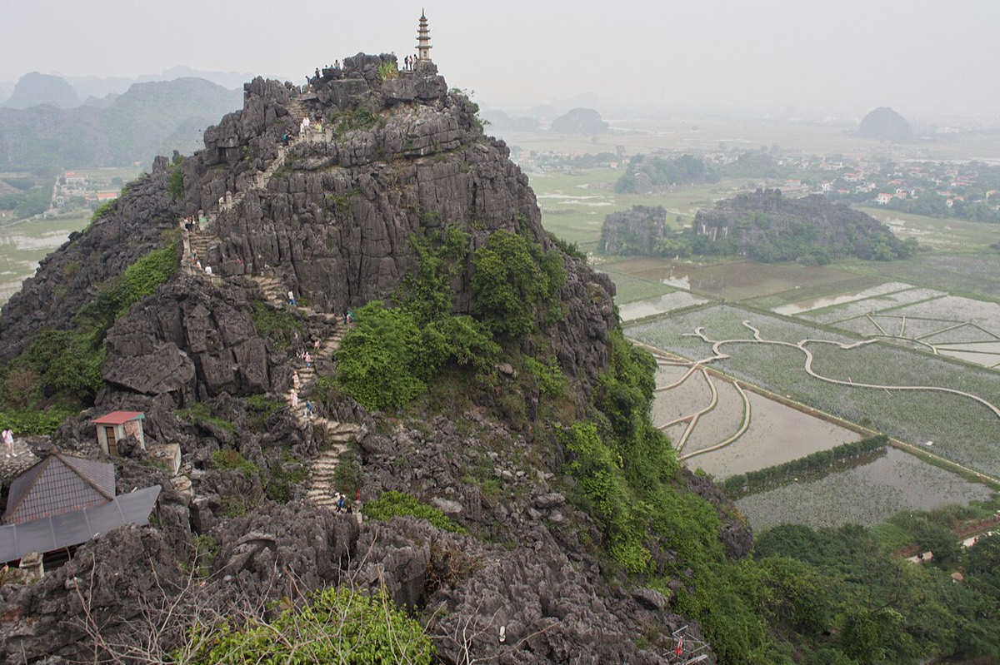
頂上が見えてくる 小塔の立つ峰へ、稜線沿いの道。眼下に田んぼが広がり始めます。Thấy đỉnh tháp Đường men sống núi lên đỉnh có tháp nhỏ; ruộng đồng hiện ra bên dưới.lumoplank, CC03
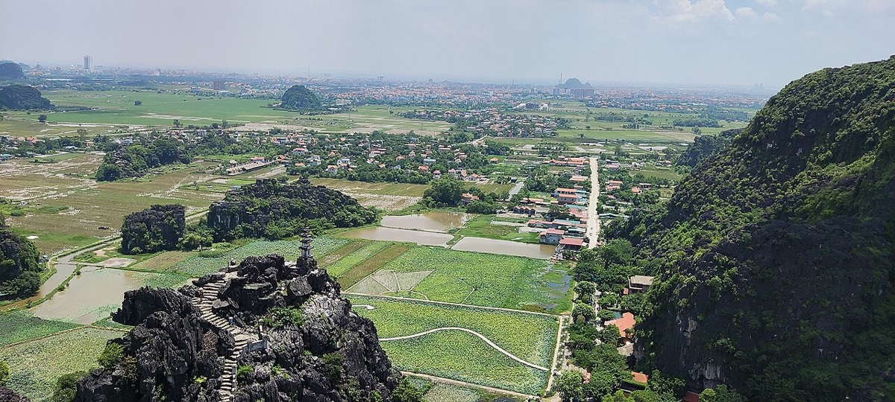
頂上に到着 岩の上から360°。風が気持ちいい場所。足元が狭いので注意。Lên tới đỉnh Tầm nhìn 360°, gió mát; đá hẹp, cẩn thận bước chân.Shyamal, CC BY-SA 4.04
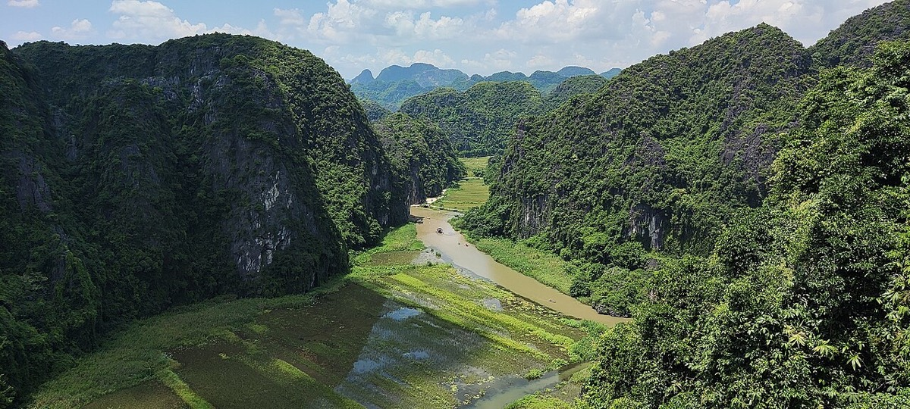
タムコックを一望 蛇行するゴードン川と石灰岩の峰。登ったご褒美の景色。Toàn cảnh Tam Cốc Sông Ngô Đồng uốn lượn giữa núi đá – phần thưởng sau 486 bậc.Shyamal, CC BY-SA 4.0
16:05 入場・登山開始 → 16:30〜16:45 山頂（分かれ道の右＝龍の像、左＝観音像）
山頂で20分ほど。夕方の光で石灰岩の峰が金色に。
17:10頃下山開始 → 17:30 駐車場
16:05 vào cổng, bắt đầu leo → 16:30–16:45 lên đỉnh (ngã rẽ: phải – tượng rồng, trái – tượng Quan Âm).
Ở đỉnh ~20 phút, nắng chiều nhuộm vàng núi đá.
~17:10 xuống → 17:30 về bãi xe.
🚩 引率メモGHI CHÚ DẪN ĐOÀN
Người không leo có thể nghỉ ở quán cà phê/khu hồ sen dưới chân núi.
Bậc đá dốc và trơn khi mưa – đi chậm, xuống trước 17:15 để còn ánh sáng.
登らない人はふもとのカフェで休憩可。
石段は急で雨だと滑りやすい。17:15までに下山開始。
💭 いまのあなたへDÀNH CHO BẠN LÚC NÀY自分のペースで大丈夫。ときどき振り返ると、登るほどに景色が広がっていきます。息が上がったら立ち止まって水を一口。頂上の風は格別です。Leo theo nhịp của mình. Thỉnh thoảng quay lại nhìn – càng lên cao cảnh càng mở ra. Mệt thì dừng, uống ngụm nước. Gió trên đỉnh rất đáng công leo.
土曜の夕方はハノイ入口（Pháp Vân / Giải Phóng）が混みやすく、ホテル着は19:30〜20:00頃の見込み。お疲れさまでした！
Tối thứ Bảy cửa ngõ Pháp Vân / Giải Phóng hay tắc, dự kiến về khách sạn 19:30–20:00. Cảm ơn mọi người!
💭 いまのあなたへDÀNH CHO BẠN LÚC NÀY一日おつかれさまでした。帰りの車内は写真を見返したり、眠ったり。ドライバーは一日運転して一番疲れている時間です。眠くなったら迷わず休憩を。最後まで安全第一で。Một ngày dài rồi – trên xe xem lại ảnh hoặc ngủ một giấc. Lúc này lái xe mệt nhất: buồn ngủ thì dừng nghỉ ngay. An toàn đến phút cuối.
🚩 引率メモGHI CHÚ DẪN ĐOÀNNếu cần nghỉ chiều về: trạm dừng nghỉ Duy Tiên – hướng Bắc (Km 227+300, rẽ phải theo biển báo), ~40 phút sau khi rời Hang Múa – nên dừng ở đây trước khi vào đoạn tắc Pháp Vân. Nhắn nhóm giờ dự kiến tới nơi khi rời trạm.帰りに休憩する場合はDuy Tiên サービスエリア（ハノイ方面）へ。ハンムアから約40分。ハノイ入口の渋滞前に済ませておくと安心。
千年の物語 — なぜホアルー、なぜハノイへ？Chuyện ngàn năm — Vì sao Hoa Lư, vì sao dời về Thăng Long?
ベトナム最初の統一王朝は、なぜこの山の中に都を置き、42年後になぜ去ったのか。Vì sao triều đại thống nhất đầu tiên đóng đô giữa núi đá, và vì sao 42 năm sau lại rời đi?
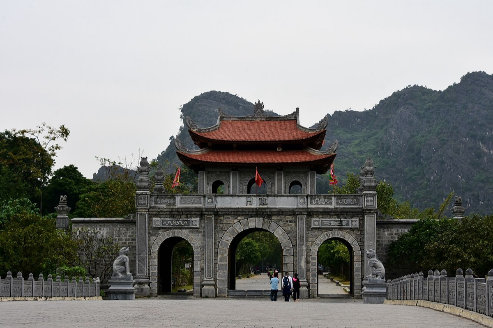
ホアルー古都・丁先皇廟の門。背後に天然の城壁となった石灰岩の山Cổng đền vua Đinh, Cố đô Hoa Lư – phía sau là núi đá "tường thành tự nhiên" · Richard Mortel, CC BY 2.0
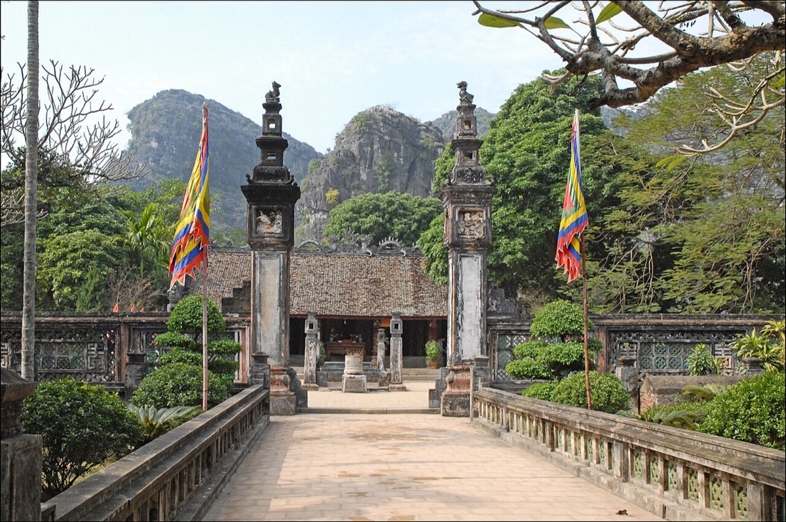
丁先皇（ディン・ティエン・ホアン）廟Đền vua Đinh Tiên Hoàng · Jean-Pierre Dalbéra, CC BY 2.0
📜 年表 — 日本と並べて📜 Niên biểu — đặt cạnh lịch sử Nhật Bản
938
白藤江（バクダン江）の戦い。呉権（ゴー・クエン）が南漢軍を破り、約1000年続いた中国支配が終わる。Chiến thắng Bạch Đằng. Ngô Quyền đánh bại quân Nam Hán, chấm dứt ~1000 năm Bắc thuộc.935–940 平将門の乱
944 –968
十二使君の乱。国が12人の豪族に分裂し、20年以上の内乱へ。Loạn 12 sứ quân. Đất nước chia cắt bởi 12 thế lực cát cứ hơn 20 năm.
968
丁部領（ディン・ボ・リン）が全国を統一し皇帝に（丁先皇）。国号を「大瞿越（ダイコーベト）」とし、故郷ホアルーを都に。Đinh Bộ Lĩnh dẹp loạn, lên ngôi (Đinh Tiên Hoàng), đặt quốc hiệu Đại Cồ Việt, đóng đô ở quê hương Hoa Lư.平安時代中期・藤原氏の摂関政治のころ
980
丁先皇の暗殺（979）後、将軍黎桓（レ・ホアン）が即位＝前黎朝。翌981年、宋の大軍を撃退。Sau khi vua Đinh bị ám sát (979), Lê Hoàn lên ngôi – nhà Tiền Lê; năm 981 đánh tan quân Tống.1000年頃 清少納言『枕草子』
1009
李公蘊（リ・コン・ウアン）がホアルーで即位＝李朝。Lý Công Uẩn lên ngôi tại Hoa Lư – mở đầu nhà Lý.1008年頃 紫式部『源氏物語』
1010
「遷都の詔」を発し、都を大羅（ダイラ）へ。「昇龍（タンロン）」と命名＝今のハノイ。李朝は216年続く長期政権に。Ban Chiếu dời đô, chuyển kinh đô ra Đại La, đặt tên Thăng Long – Hà Nội ngày nay. Nhà Lý kéo dài 216 năm.1016 藤原道長が摂政に
1258 –1288
陳（チャン）朝がモンゴル（元）の侵攻を3度撃退。チャンアンの奥にある「武林行宮」は陳朝ゆかりの地。Nhà Trần 3 lần đánh thắng quân Mông–Nguyên. Hành cung Vũ Lâm trong Tràng An gắn với nhà Trần.1274・1281 元寇（文永・弘安の役）——同じ敵と戦った隣人
2010
10月10日、ハノイで「昇龍・ハノイ千年祭」。同年、タンロン遺跡が世界遺産に。10/10: Đại lễ 1000 năm Thăng Long – Hà Nội. Cùng năm, Hoàng thành Thăng Long thành Di sản Thế giới.
2014
チャンアン景観複合体がベトナム初の世界複合遺産（自然＋文化）に。ホアルー古都もその一部。Quần thể danh thắng Tràng An là Di sản hỗn hợp (thiên nhiên + văn hoá) đầu tiên của Việt Nam; Cố đô Hoa Lư nằm trong quần thể.
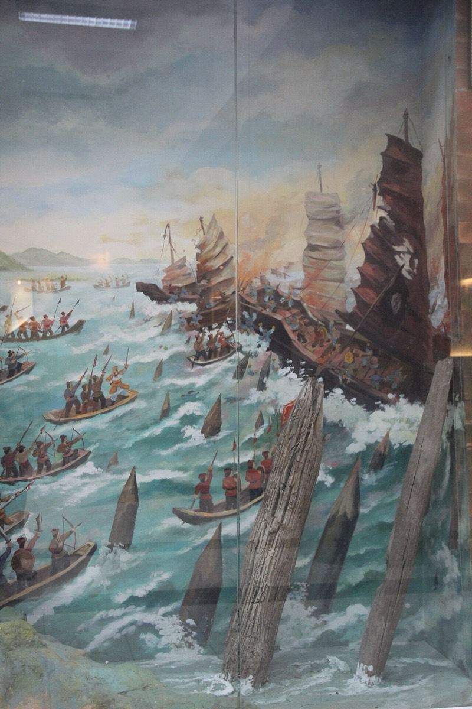
938 白藤江の杭 満潮に隠れる木の杭で敵船を座礁させる戦法。1288年のモンゴル戦でも再び使われた（博物館の絵）。938 – Cọc Bạch Đằng Cắm cọc gỗ ngầm, chờ thủy triều rút cho thuyền giặc mắc cạn; năm 1288 dùng lại chiến thuật này (tranh bảo tàng).Gary Todd, CC0
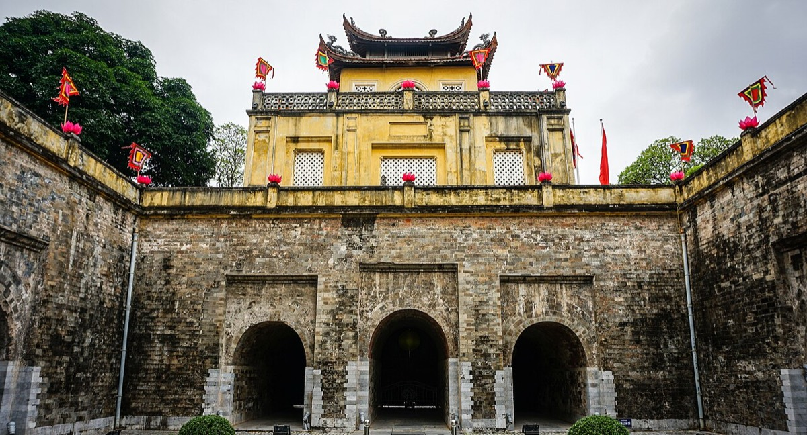
2010 タンロン皇城 1000年続いた都の中心部。2010年に世界遺産に登録。2010 – Hoàng thành Thăng Long Trung tâm kinh đô suốt 1000 năm, Di sản Thế giới năm 2010.katiebordner, CC BY 2.0
🗺 1000年前の「ベトナム」はこんな形🗺 Bản đồ "Việt Nam" 1000 năm trước
🔍 タップで拡大。🔍 Chạm để phóng to. 西暦1000〜1100年頃の東南アジア大陸部。青＝大越（ホアルー・大羅）、黄＝チャンパ、赤＝クメール（アンコール）Đông Nam Á lục địa khoảng 1000–1100. Xanh = Đại Việt (Hoa Lư, Đại La), vàng = Champa, đỏ = Khmer (Angkor) · Javierfv1212, CC0
🔵 Đại Cồ Việt (sau là Đại Việt) chỉ là miền Bắc ngày nay: đồng bằng sông Hồng, trung du, phía Nam đến Thanh Hóa – Nghệ An – Hà Tĩnh (khoảng Đèo Ngang). Chưa có "hình chữ S". Hoa Lư nằm ở rìa Nam đồng bằng, nơi đồng bằng gặp núi.
🟡 Vương quốc Champa của người Chăm theo văn hoá Ấn Độ giáo trải dọc duyên hải miền Trung. Kinh đô Indrapura (Quảng Nam), khoảng năm 1000 dời vào Vijaya (Bình Định). Mỹ Sơn, tháp Chăm là di sản của họ. Năm 982 Lê Hoàn đánh Champa.
🔴 Đế quốc Khmer (Angkor): Nam Bộ và đồng bằng sông Cửu Long ngày nay thuộc Khmer; đầu thế kỷ XII họ xây Angkor Wat.
Phía Bắc là nhà Tống – mối đe doạ thường trực với nền độc lập.
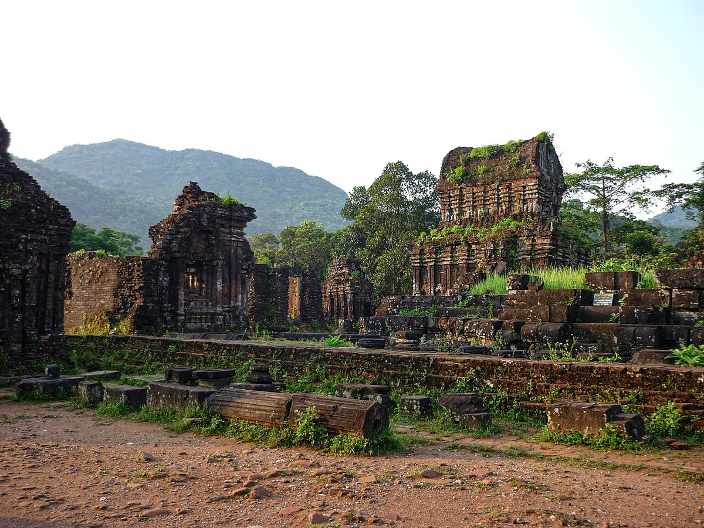
🟡 ミーソン聖域（チャンパ） チャンパ王国のヒンドゥー教の聖地。赤レンガの塔が森に残る（世界遺産）。🟡 Thánh địa Mỹ Sơn (Champa) Thánh địa Ấn Độ giáo của Champa, tháp gạch đỏ giữa rừng (Di sản Thế giới).Philip Nalangan, CC BY 4.0
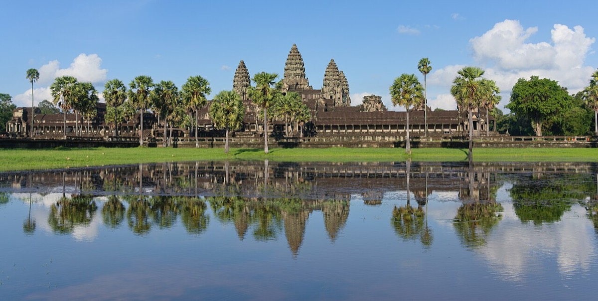
🔴 アンコール・ワット（クメール） 12世紀前半に建てられたクメール帝国の大寺院。🔴 Angkor Wat (Khmer) Đền lớn của đế quốc Khmer, xây đầu thế kỷ XII.Satdeep Gill, CC BY-SA 4.0
➡ 「S字」ができるまで（南進 Nam tiến）➡ Hình chữ S hình thành thế nào (Nam tiến)
1069
李朝がチャンパから3州を獲得（今のクアンビン・クアンチ北部）。Nhà Lý lấy 3 châu Bố Chính, Địa Lý, Ma Linh (Quảng Bình, bắc Quảng Trị nay).
1306
陳朝の玄珍（フエン・チャン）公主がチャンパ王に嫁ぎ、その結納として烏州・里州（今のフエ周辺）を得る。Công chúa Huyền Trân nhà Trần lấy vua Chăm Chế Mân; Đại Việt nhận châu Ô, châu Lý (vùng Huế nay).
1471
黎聖宗がチャンパの都ヴィジャヤを攻略。Lê Thánh Tông chiếm kinh đô Vijaya của Champa.
17–18c
阮氏がメコンデルタまで進出し、18世紀半ばに今の南部までが含まれる＝ほぼ現在の「S字」に。Các chúa Nguyễn mở đất đến đồng bằng sông Cửu Long; giữa thế kỷ XVIII lãnh thổ gần như hình chữ S ngày nay.
Chiếu viết: hai nhà Đinh, Lê "theo ý riêng, coi thường mệnh trời" nên vận nước ngắn ngủi. Nhà Lý sau đó tồn tại 216 năm.
朕欲因此地利以定厥居，卿等如何？
"Trẫm muốn nhân địa lợi ấy mà định chỗ ở, các khanh nghĩ thế nào?"
「朕はこの地の利によって都を定めたいと思う。諸卿はどう思うか」
——『遷都の詔（Chiếu dời đô）』の結び。皇帝が一方的に命じるのではなく、臣下に意見を問う形で終わるのが特徴です。— câu kết của Chiếu dời đô. Điểm đặc biệt: nhà vua kết thúc bằng việc hỏi ý kiến quần thần.
🐉 昇龍伝説：李太祖の船が大羅の城下に着いたとき、黄金の龍が天に昇るのが見えた——それで新しい都を「昇龍（タンロン）」と名付けたと伝えられます（伝説）。ハノイの街に龍のモチーフが多いのはこのため。🐉 Truyền thuyết: khi thuyền vua Lý tới thành Đại La, thấy rồng vàng bay lên, nên đặt tên kinh đô mới là Thăng Long ("rồng bay lên"). Vì thế Hà Nội có rất nhiều hình tượng rồng.
1
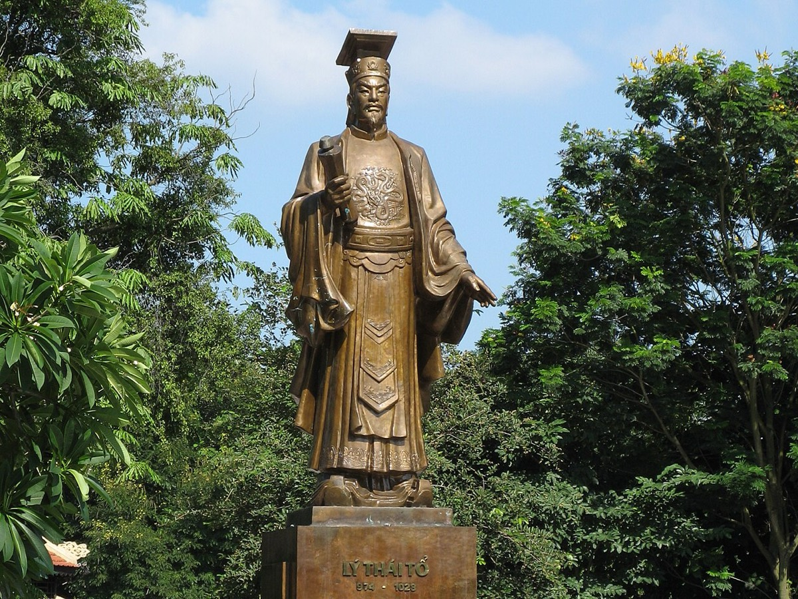
李太祖像 遷都を決めた李太祖。ハノイ・ホアンキエム湖畔に立つ。Tượng Lý Thái Tổ Vị vua dời đô, bên hồ Hoàn Kiếm.William Whyte, CC BY-SA 2.02
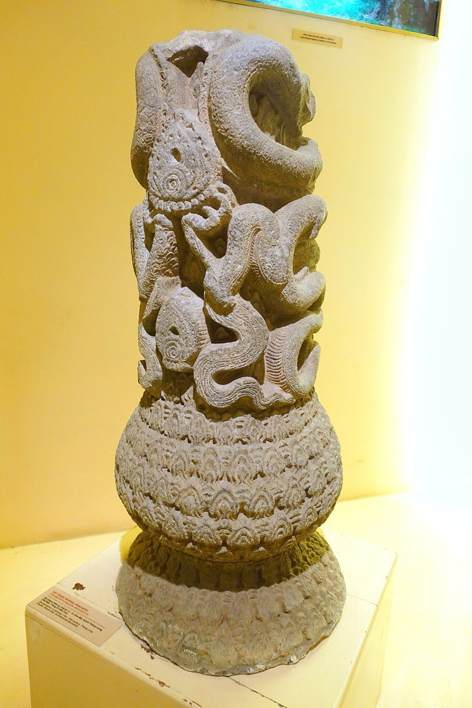
李朝の龍の石柱 タンロン皇城から出土（11〜13世紀）。波の上を龍が巻き上がる。Cột đá chạm rồng thời Lý Đào được ở Hoàng thành Thăng Long (thế kỷ XI–XIII): rồng cuộn trên sóng.Daderot, CC03
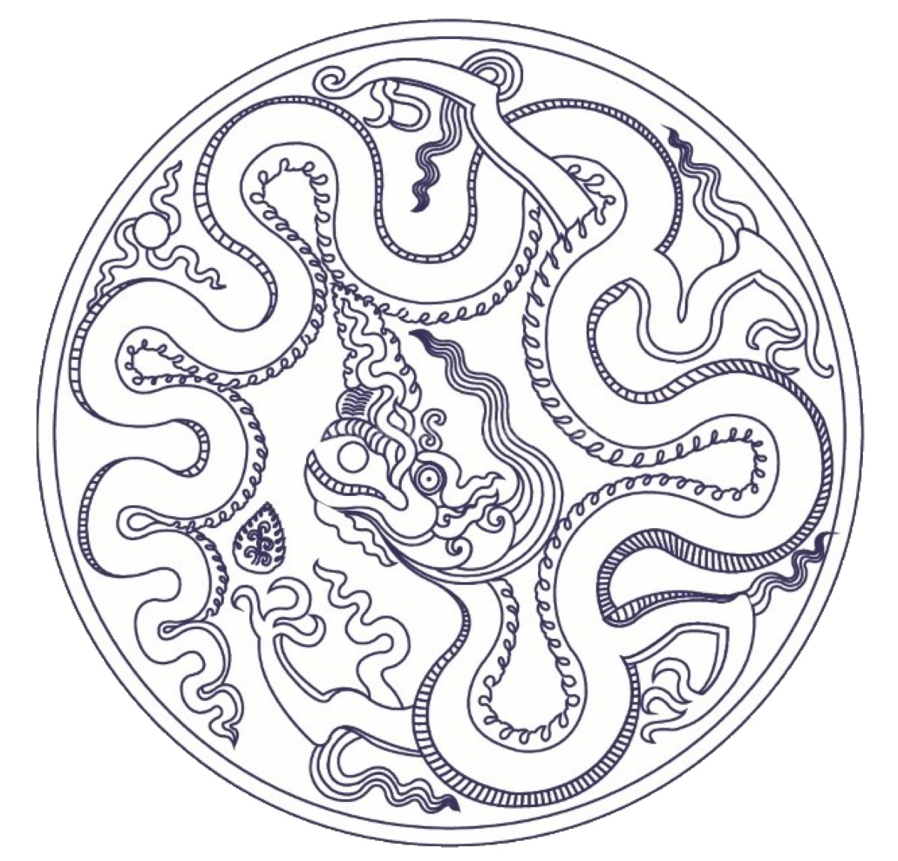
李朝の龍の文様 蛇のように細長く、波打つ体が特徴。中国の龍より優美でしなやか。Hoạ tiết rồng thời Lý Thân mảnh, uốn khúc như rắn – mềm mại hơn rồng Trung Hoa.Quocdung01604, CC BY-SA 4.04
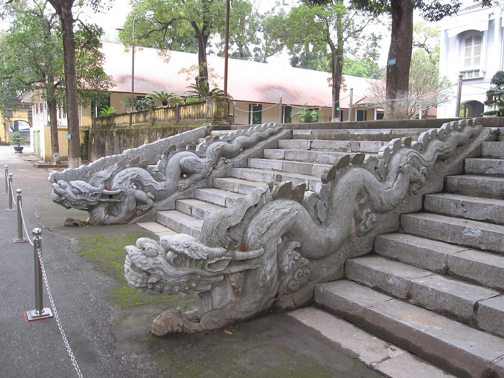
敬天殿の龍の階段 皇城の正殿跡に残る石の龍（15世紀・黎朝）。龍は今もハノイの象徴。Bậc rồng điện Kính Thiên Rồng đá thềm chính điện Hoàng thành (thế kỷ XV, thời Lê) – rồng vẫn là biểu tượng Hà Nội.Gryffindor, CC BY-SA 3.0
ℹ 2025年7月の行政再編で、ニンビン省は旧ハナム省・ナムディン省と合併し新しい「ニンビン省」に。「ホアルー」の名は現在「ホアルー坊（phường Hoa Lư）」として残っています。ℹ Từ 1/7/2025, Ninh Bình hợp nhất với Hà Nam và Nam Định thành tỉnh Ninh Bình mới; tên "Hoa Lư" nay là phường Hoa Lư.
🏮 1000年前のベトナムの暮らし🏮 Đời sống người Việt 1000 năm trước
Nhà sư là cố vấn của vua. Năm 969 Đinh Tiên Hoàng phong sư Khuông Việt làm Tăng thống; thiền sư Vạn Hạnh giúp Lý Công Uẩn lên ngôi. Chùa Một Cột tương truyền được vua Lý Thái Tông dựng năm 1049 sau giấc mơ thấy Quán Thế Âm.
60 năm sau dời đô, nhà Lý lập Văn Miếu (1070), mở khoa thi đầu tiên (1075) và Quốc Tử Giám (1076) – trường đại học đầu tiên. Đến nay sĩ tử vẫn đến Văn Miếu cầu may trước kỳ thi.
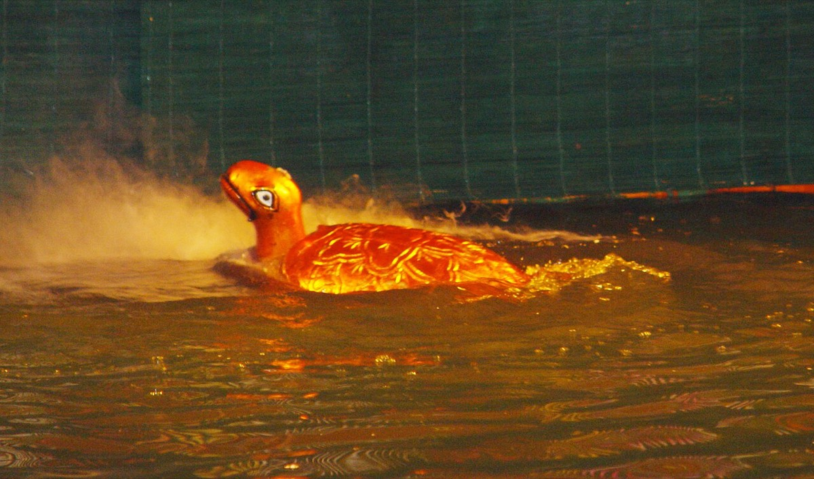
水上人形劇の金の亀Rối nước – rùa vàng · Steven C. Price, CC BY-SA 4.0
Năm 987 Lê Hoàn lần đầu làm lễ tịch điền – vua tự cày ruộng ở núi Đọi. Cũng trên núi ấy, bia chùa Long Đọi Sơn (1121) tả cảnh rùa vàng đội ba núi nổi trên sóng nước – ghi chép sớm nhất về múa rối nước.
Dấu hiệu người Việt xưa là răng đen: ăn trầu, nhuộm răng để phân biệt với người phương Bắc ("răng trắng như răng Ngô"). Giống tục お歯黒 của quý tộc Heian Nhật Bản nhưng hình thành độc lập. Năm 1285 quân Trần thích chữ "Sát Thát" lên tay.
Đinh Bộ Lĩnh xưng Hoàng đế trong nước, nhưng nhận tước "Giao Chỉ quận vương" của nhà Tống – trong xưng đế, ngoài xưng vương. Triều đình đặt vạc dầu, chuồng hổ để răn kẻ phạm tội. Từ năm 970 đúc đồng tiền đầu tiên Thái Bình hưng bảo (mặt sau có chữ 丁).
Dân thường: nam đóng khố, cởi trần; nữ mặc yếm, váy. Sách Trung Hoa tả người Giao Chỉ "tóc ngắn, xăm mình, đi chân đất, răng đen". Năm 990 sứ Tống thấy Lê Hoàn – vừa viện cớ đau chân không quỳ – lại lội chân đất xuống sông bắt cá. Triều phục theo kiểu Tống, nhưng năm 1040 Lý Thái Tông cho cung nữ học dệt gấm, thôi dùng gấm Tống.
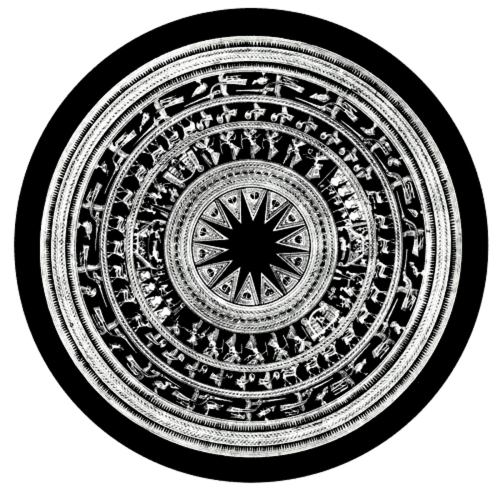
玉縷銅鼓の文様Hoa văn trống đồng Ngọc Lũ · Doremon360, CC BY-SA 4.0
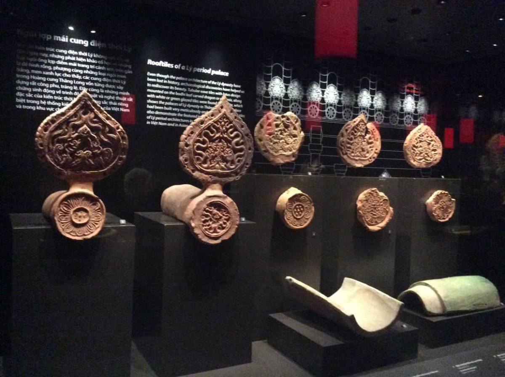
皇城出土の李朝の瓦Ngói thời Lý, Hoàng thành · Nguyenkhanh159, CC BY-SA 4.0
Trống đồng Đông Sơn (hơn 2000 năm trước) khắc nhà sàn mái cong hình thuyền, người giã gạo, vũ công đội lông chim. Hoàng thành Thăng Long tìm thấy ngói đất nung thời Lý hình lá đề có chim phượng – nay là Bảo vật quốc gia. Nhà dân có lẽ làm bằng tre, gỗ, mái tranh.
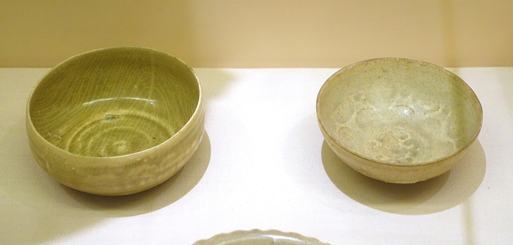
李〜陳朝の青磁の碗Bát men ngọc thời Lý–Trần · Daderot, CC0
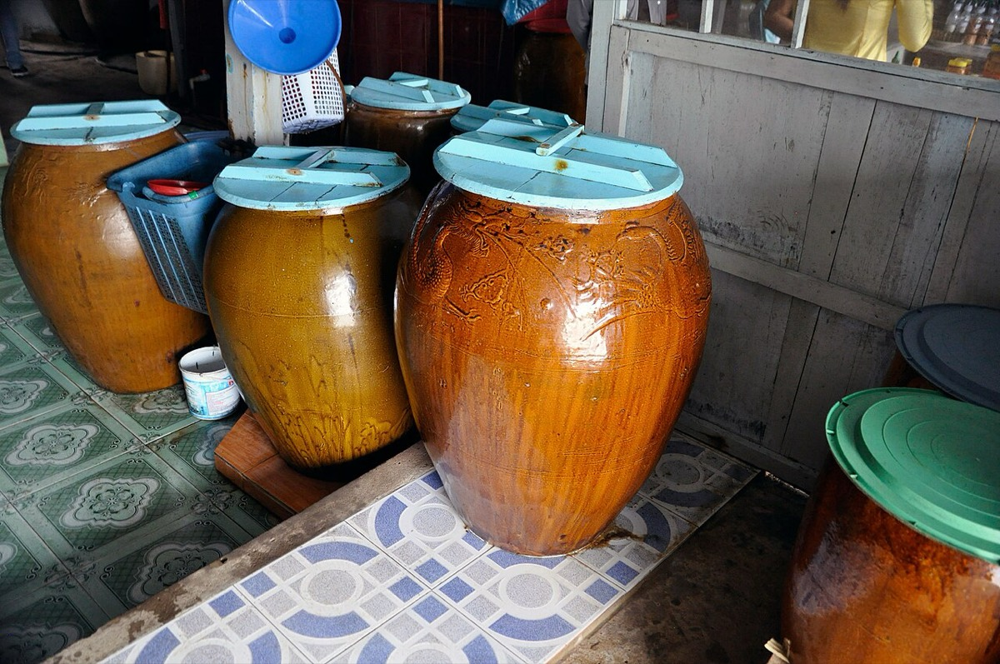
ヌクマムを熟成させる甕（現代）Chum ủ nước mắm (ngày nay) · P. Hughes, CC BY 4.0
🍚 毎日のごはん：米・魚・野菜・ヌクマムĂn uống: cơm, cá, rau, nước mắm
Bữa ăn chính là cơm lúa nước, cá sông đồng và rau; thời Lý đã dùng bát men ngọc. Nước mắm là sản vật quý: sử chép năm 997 sứ Tống lấy cớ "đòi nước mắm" để sách nhiễu, khiến vua Tống thôi cử sứ; năm 1013 nước mắm bị đánh thuế (theo sử biên soạn về sau).
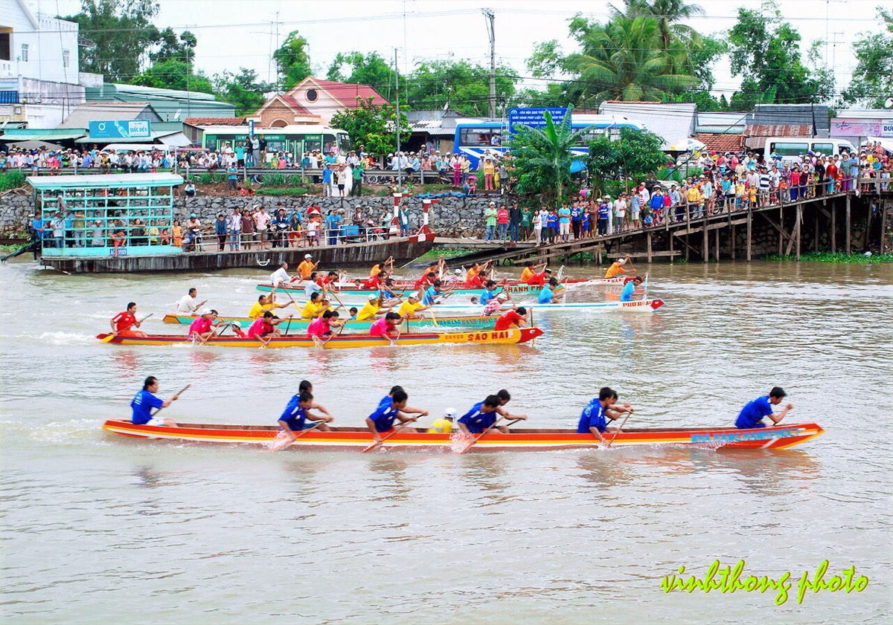
今も各地で行われる伝統の舟競争（現代・アンザン省）Đua thuyền truyền thống ngày nay (An Giang) · Mộc Viên, CC BY-SA 4.0
Năm 987 Lê Hoàn làm lễ tịch điền; bia năm 1121 ghi lại múa rối nước – lễ hội của xứ lúa nước. Ở Hoa Lư, lễ hội Trường Yên (8–10/3 âm lịch) vẫn tái hiện tích "cờ lau tập trận". Hình thuyền trên trống đồng gợi nhớ truyền thống đua thuyền còn ở nhiều nơi.
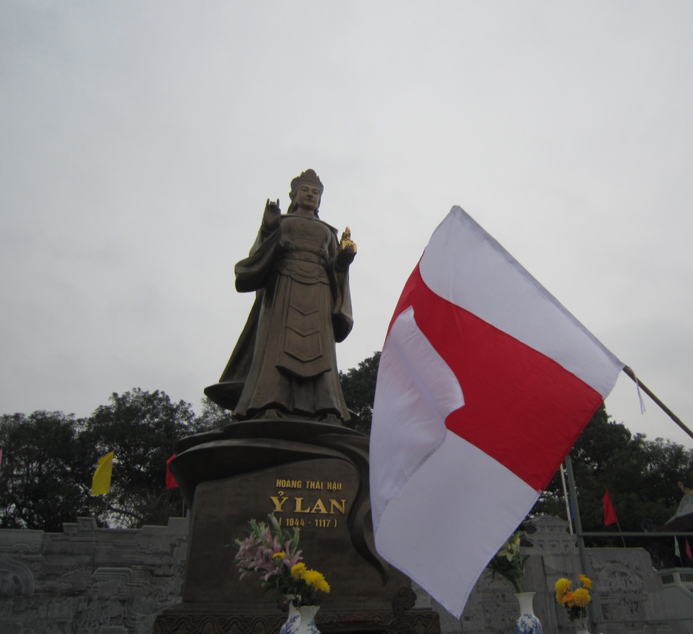
李朝の倚蘭（イーラン）元妃の像Tượng Nguyên phi Ỷ Lan · Aogiapvang, PD
Phụ nữ Việt có vị thế cao hơn so với Trung Hoa. Hai Bà Trưng (năm 40), Bà Triệu (248) là anh hùng dân tộc. Dương Vân Nga là hoàng hậu của cả Đinh Tiên Hoàng và Lê Hoàn, được thờ ở đền vua Lê tại Hoa Lư. Nguyên phi Ỷ Lan nhiếp chính năm 1069 khi vua Lý Thánh Tông đánh Champa – nghe tin trong nước yên ổn, vua quyết đánh tiếp và thắng trận.
🇨🇳🇻🇳 中国との千年 — 支配の歴史と、分かち合う文化🇨🇳🇻🇳 Ngàn năm với Trung Hoa — lịch sử và văn hoá chung
「支配と抵抗」と「文化を分かち合う隣人」——その両方が、ベトナムと中国の千年です。
Vừa là lịch sử đô hộ và đấu tranh, vừa là câu chuyện hai láng giềng chia sẻ văn hoá – cả hai đều là ngàn năm Việt – Trung.
Nông nghiệp: thế kỷ I, thái thú Cửu Chân Nhâm Diên cho đúc nông cụ sắt, khai khẩn ruộng đất, dạy lễ cưới hỏi (Hậu Hán thư).
Học tổ: thái thú Sĩ Nhiếp (thế kỷ II–III) đón nhiều học giả lánh loạn, mở trường dạy chữ Hán, Nho học ở Luy Lâu (Bắc Ninh); được tôn là "Nam Giao học tổ".
Trung tâm Phật giáo: Luy Lâu quy tụ tăng sĩ Trung Hoa và Ấn Độ.
Trong ~1000 năm (111 TCN – 938), chữ Hán, bộ máy quan lại Nho giáo, Phật giáo (qua cả Trung Hoa và Ấn Độ) bén rễ.
Nhưng người Việt giữ được tiếng nói và phong tục riêng. Văn bản nhà nước viết chữ Hán, còn chữ Nôm xuất hiện lác đác từ thời Lý, phát triển thời Trần.
Bài thơ "Nam quốc sơn hà" theo truyền thống gắn với Lý Thường Kiệt (1077), được gọi là "bản tuyên ngôn độc lập đầu tiên" (tác giả, niên đại còn tranh luận). Hai câu đầu:
南國山河南帝居 截然定分在天書
Nam quốc sơn hà Nam đế cư Tiệt nhiên định phận tại thiên thư
"Sông núi nước Nam vua Nam ở / Rành rành định phận tại sách trời." Bài thơ viết bằng chữ Hán – cho thấy người Việt thời ấy vừa chia sẻ văn hoá Hán, vừa khẳng định đất nước của riêng mình.
Tác giả bài thơ nổi tiếng trong Bách nhân nhất thủ, Abe no Nakamaro (tên Hán: Triều Hành), làm quan nhà Đường và cai quản An Nam (Hà Nội nay) khoảng 761–767.
チャンパの僧・仏哲と雅楽「林邑楽」Sư Phật Triết và nhạc Lâm Ấp trong nhã nhạc Nhật
Nhà sư Phật Triết từ Lâm Ấp (Champa, miền Trung VN) sang Nhật năm 736, biểu diễn trong lễ khai nhãn Đại Phật chùa Tōdai-ji (752). "Lâm Ấp nhạc" ông truyền lại vẫn còn trong nhã nhạc gagaku; năm 2014 được biểu diễn "về quê" tại Huế.
その後：朱印船とアニオー姫Về sau: thuyền Châu ấn và công chúa Ngọc Hoa
Thời Hoa Lư (thế kỷ X–XIII) chưa thấy ghi chép giao lưu trực tiếp Đại Việt – Nhật Bản. Đến thế kỷ XVII: Chùa Cầu Hội An do người Nhật dựng (thập niên 1590); năm 1619 thương nhân Araki Sotarō cưới công chúa Ngọc Hoa của chúa Nguyễn, đưa về Nagasaki (tên Nhật "Anio").
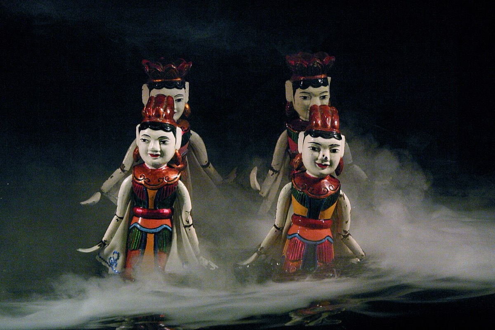
ハノイの水上人形劇「仙女の舞」——旅の後、ハノイでぜひMúa rối nước Hà Nội – "Múa tiên" · Greg Willis, CC BY-SA 2.0
🇻🇳 歴史から読む「ベトナム人らしさ」🇻🇳 Tính cách người Việt nhìn từ lịch sử
⚠ ここで紹介するのは、一部の研究者による解釈であり、決まった事実ではありません。ベトナムには54の民族があり、地域や世代による違いも大きいもの。目の前の一人ひとりは、それぞれ違う個人です。⚠ Đây là cách lý giải của một số nhà nghiên cứu, không phải chân lý cố định. Việt Nam có 54 dân tộc, khác biệt vùng miền và thế hệ rất lớn – mỗi người là một cá nhân riêng.
Người Việt hay được nhận xét là "linh hoạt", "thích ứng nhanh", "giỏi ứng biến". Có phải chỉ vì chiến tranh? Các nhà nghiên cứu cho rằng nhiều yếu tố đan xen.
GS. Trần Ngọc Thêm coi gốc văn hoá Việt là nông nghiệp lúa nước: sống chung với lũ lụt, bão gió khó đoán nên chọn hoà hợp với tự nhiên, tư duy tổng hợp – biện chứng, ứng xử năng động, linh hoạt. Ông cũng chỉ ra mặt trái là "thói tùy tiện".
Chữ Hán, Nho giáo, Phật giáo, rồi văn hoá Pháp, Mỹ… người Việt không khước từ mà tiếp nhận rồi Việt hoá: chữ Hán thành chữ Nôm, Phật giáo hoà với tín ngưỡng dân gian, bánh mì Pháp thành bánh mì Việt – giống Nhật Bản sáng tạo chữ kana từ chữ Hán.
Như niên biểu hôm nay, Việt Nam nhiều lần đối mặt với các đế chế lớn. Từ đó hình thành trí tuệ "lấy yếu chống mạnh" (như cọc Bạch Đằng), sự gắn kết làng xã – gia đình, và lối nghĩ thực tế. Nhưng chiến tranh không phải yếu tố duy nhất.
🏘 ④ 村の自治とことわざ④ Làng xã và tục ngữ
「Phép vua thua lệ làng（王の法も村の掟に負ける）」——村ごとに独自の決まりを持ち、国の法と村の慣習の間でうまく折り合いをつけてきました（実際には役所の承認も必要でしたが）。「Ở bầu thì tròn, ở ống thì dài（ひょうたんに入れば丸く、筒に入れば長くなる）」は、人は環境に合わせて形を変える、という意味のことわざです。
"Phép vua thua lệ làng" – mỗi làng có hương ước riêng, người Việt quen dung hoà giữa luật nước và lệ làng (dù thực tế hương ước vẫn cần quan phê duyệt). "Ở bầu thì tròn, ở ống thì dài" – con người đổi hình theo môi trường sống.
⏳ 1000年前と今をつなぐもの⏳ Từ 1000 năm trước đến hôm nay
米は今も食卓の中心。旧正月（テト）には、もち米の「バインチュン」を家族で包みます。
お歯黒は消えましたが、キンマ（trầu cau）は今も結婚の申し込みや結納に欠かせない縁起物です。
村・家族のつながりは今も強く、テトには都会から故郷へ大移動が起きます。
李朝の文廟には、今も受験生が合格祈願に訪れます。仏教と土着の信仰が共存するのも千年来の姿です。
Cơm vẫn là trung tâm bữa ăn; Tết cả nhà gói bánh chưng.
Răng đen không còn, nhưng trầu cau vẫn không thể thiếu trong lễ dạm ngõ, ăn hỏi.
Gắn bó làng – gia đình vẫn rất mạnh: Tết là cuộc "đại di cư" về quê.
Sĩ tử vẫn đến Văn Miếu cầu đỗ đạt; Phật giáo và tín ngưỡng dân gian vẫn song hành như ngàn năm trước.
🤝 日本から見たベトナム、ベトナムから見た日本🤝 Người Nhật nhìn người Việt – người Việt nhìn Nhật Bản
Người Việt sinh sống tại Nhật (cuối 2025) – nhóm người nước ngoài đông thứ 2 sau Trung Quốc, đông nhất trong thực tập sinh kỹ năng và kỹ năng đặc định.
94%
日本を「信頼できる」と答えたASEAN諸国の人の割合（外務省 ASEAN世論調査 2025年）。
Người dân ASEAN cho rằng Nhật Bản "đáng tin cậy" (khảo sát của Bộ Ngoại giao Nhật, 2025).
Báo cáo JETRO: doanh nghiệp Nhật đánh giá nhân sự Việt "năng lực cao hơn mong đợi, rất chủ động", đồng thời lưu ý tâm lý giữ thể diện khi nói về thất bại, và khác biệt thế hệ (sinh thập niên 70 và 90 có quan niệm làm việc khác nhau).
東遊（ドンズー）運動 — 期待と挫折の歴史Phong trào Đông Du — hy vọng và dang dở
Năm 1905, Phan Bội Châu sang Nhật, đưa thanh niên Việt sang du học (khoảng 200 người năm 1908). Năm 1907 Nhật ký hiệp ước với Pháp, phong trào bị trục xuất, kết thúc khoảng 1909 – một trang sử Việt–Nhật có cả hy vọng lẫn cay đắng.
Thiết lập quan hệ ngoại giao năm 1973; năm 2023 nâng lên Đối tác chiến lược toàn diện. Chuyến đi hôm nay – cùng cười, cùng ăn, cùng leo núi – cũng là một trang nhỏ nối dài câu chuyện ngàn năm ấy.
📖 車内で読もう — もっと知りたい人へĐọc trên xe — cho ai tò mò muốn tìm hiểu thêm
Tương truyền thế kỷ XIII, vua Trần Thái Tông (1218–1277) về Hoa Lư lập hành cung Vũ Lâm và Am Thái Vi. Mỗi lần qua đây, vua thường dừng chân xem cung nữ múa hát trong hang dưới chân núi – dân gian gọi là Hang Múa.
Hành cung cũng là căn cứ chống quân Mông–Nguyên; Trần Nhân Tông từ đây đi tu, gắn với sự ra đời của Thiền phái Trúc Lâm. Hành cung Vũ Lâm (đi thuyền buổi trưa) và Hang Múa (leo buổi chiều) cùng chung một câu chuyện về các vua Trần.
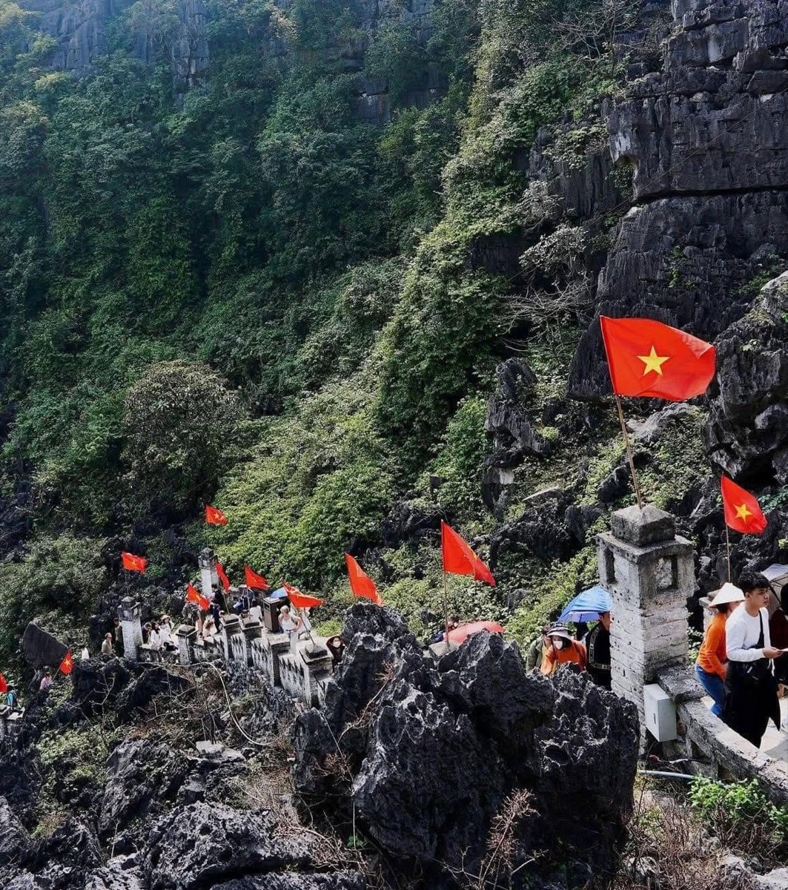
国旗がはためく岩場の登山道Lối leo giữa vách đá, cờ đỏ sao vàng tung bay
🧭 山の上のマップ🧭 Trên đỉnh có gì?
🪜
486段の石段486 bậc đá
万里の長城を模した石段。両脇には龍・鳳凰・鷲の石彫り。上りは20〜45分（休みながらでOK）。
Bậc đá mô phỏng Vạn Lý Trường Thành, hai bên có tượng rồng, phượng, đại bàng bằng đá. Leo 20–45 phút.
Thung lũng Tam Cốc, sông Ngô Đồng uốn lượn với thuyền nan, núi đá trùng điệp. Lúa chín tháng 5–6, đầm sen ~1 ha nở tháng 5–7; tháng 10 đẹp nhất là nắng chiều.
稜線を這う龍の像「臥龍（Ngọa Long）」——山の別名も「臥龍山」Tượng rồng trên sống núi – núi còn gọi là núi Ngọa Long · Superbass, CC BY-SA 4.0
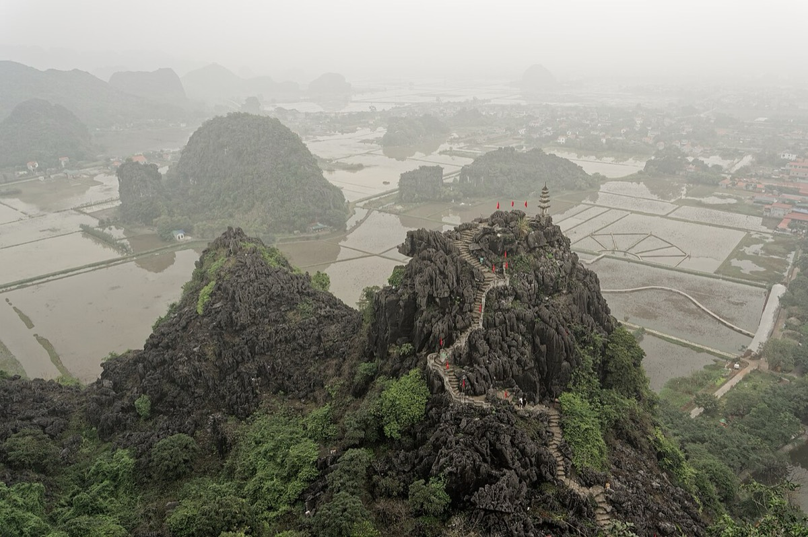
霧の朝の稜線と石段（空撮）Sống núi và đường bậc đá trong sương sớm · Jakub Hałun, CC BY 4.0
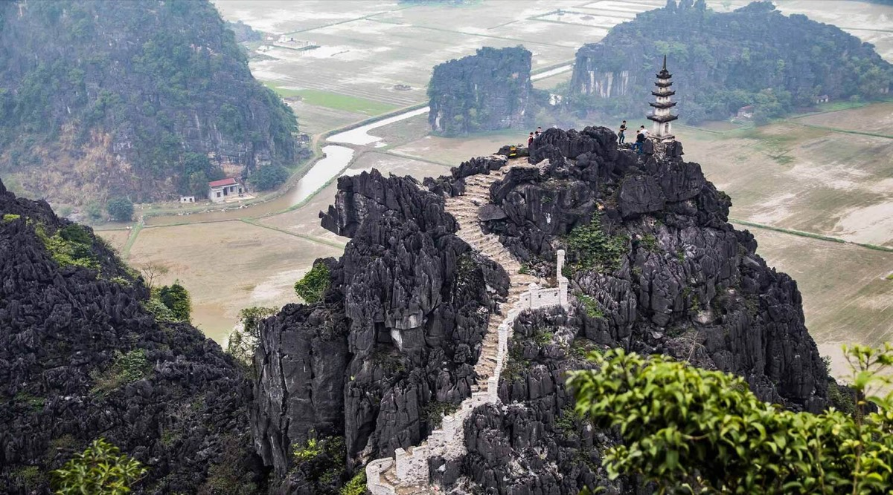
山頂からの眺めCảnh nhìn từ đỉnh
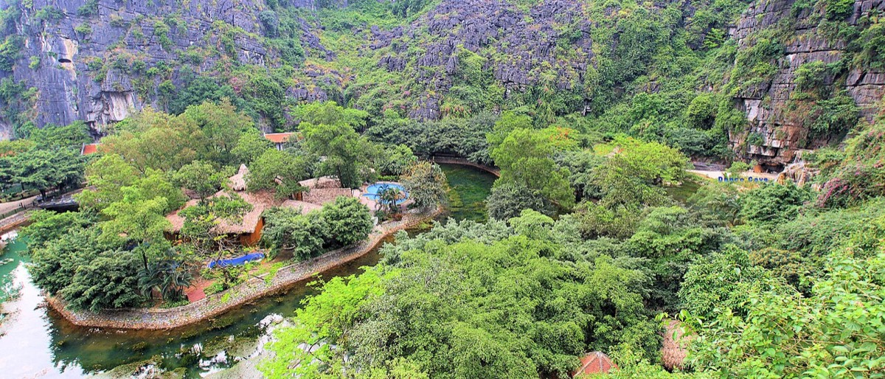
ふもとのエリア（エコロッジ・庭園・池）。登らない人はここで休憩Khu chân núi (ecolodge, vườn, hồ) – chỗ nghỉ cho người không leo · Khoitran1957, CC BY-SA 4.0